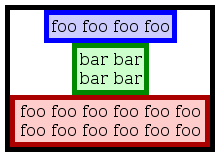

The specification describes a CSS box model optimized for user interface design. In flexbox layout model, the children of a box are laid out either horizontally or vertically, and unused space can be assigned to a particular child or distributed among the children by assignment of "flex" to the children that should expand. Nesting of these boxes (horizontal inside vertical, or vertical inside horizontal) can be used to build layouts in two dimensions.
CSS 2.1 defined four layout modes — algorithms which determine the size and position of boxes based on their relationships with their sibling and ancestor boxes: block layout, designed for laying out documents and simple applications; inline layout, designed for laying out text; table layout, designed for laying out information in a tabular format; and positioned layout, designed for very explicit positioning without much regard for other elements in the document. This module introduces a new layout mode, flexbox layout, which is designed for laying out more complex applications and webpages.
Flexbox layout is superficially similar to block layout. It lacks many of the more complex text or document-formatting properties that can be used in block layout, such as 'float' and 'columns', but in return it gains more simple and powerful tools for aligning its contents in ways that webapps and complex web pages often need.
The contents of a flexbox can be laid out in any direction, can have their order swapped around dynamically, and can "flex" their sizes and positions to respond to the available space. If a flexbox is multi-line, the flexbox items flow in two dimensions, wrapping into separate lines in a fashion similar to how text is wrapped into multiple lines. The direction that these lines are stacked in can also be controlled explicitly, relative either to the current writing mode (logical directions) or explicit physical directions.
An element with ''display:flexbox'' or ''display:inline-flexbox'' is a flexbox. Block-level children of a flexbox, and some other types of children, are called flexbox items and are laid out using the flexbox box model. (See the Flexbox Items chapter, below, for specifics on which children are flexbox items directly and which children are instead wrapped in anonymous boxes which are then flexbox items)
The flexbox layout algorithm works is agnostic as to the physical direction the flexbox happens to be laid out in, so we will define several direction-agnostic terms here to make the rest of the spec easier to read and understand. The main axis of a flexbox is the axis on which flexbox items are laid out along. The flexbox items are ordered such that they start on the main-start side of the flexbox, and go toward the main-end side. A flexbox item's width or height, whichever is in the main axis, is the item's main size. These terms are mapped to physical directions based on the first keyword in the 'flex-flow' property.
The axis perpendicular to the main axis is called the cross axis, and similarly has cross-start and cross-end directions and sides defined. The width or height of a flexbox item, whichever is in the cross axis, is the item's cross size. These terms are mapped to physical directions based on the orientation of the main axis and the second keyword in the 'flex-flow' property.
The contents of a flexbox can be easily and powerfully manipulated with a handful of properties. Most significantly, flexbox items can "flex" their main size by using the ''flex()'' function in the 'width' or 'height' property. This "flexing" allows the items to get bigger or smaller based on the available space in the page. If there is leftover space in the flexbox after all of the flexbox items have finished flexing, the items can be aligned, centered, or distributed with the 'flex-pack' property. Flexbox items can also be completely rearranged within the flexbox with the 'flex-order' property.
In the cross axis, flexbox items can either "flex" to fill the available space or be aligned within the space with the 'flex-align' property. If a flexbox is multi-line, new lines are added in the cross-end direction, and can similarly be aligned, centered, or distributed within the flexbox with the 'flex-line-pack' property.
Similar to other layout modes such as table layout, a flexbox acts like a block when placed into elements using other layout modes. Inline flexboxes act like inline-blocks. Figure out the right terms to use here.
For example, the following HTML snippet declares a flexbox with a few children. The flexbox is horizontal, and the children's widths don't fill the flexbox's width, so the additional space is distributed between the children. The flexbox's height isn't explicitly specified, so it shrinks to the height of its tallest child and centers the other children within it:
<p style="width: 500px; padding: 5px; display: flexbox; flex-pack: distribute; flex-align: middle;"> <button style="width: 200px;">Child 1<br>Another Line</button> <button style="width: 100px;">Child 2</button> <button style="width: 100px;">Child 3</button> </p>
This will render approximately like the following:
| Name: | display |
|---|---|
| New value: | flexbox | inline-flexbox |
You can declare that an element is a flexbox, and thus should use flexbox layout, by setting the 'display' property on the element to the value 'flexbox' or 'inline-flexbox'.
Flexbox establishes a new block formatting context for its content.
Flexbox layout algorithm operates on flexbox items, which are boxes that satisfy at least one of the following criteria:
Examples of flexbox items:
<div style="display:flexbox">
<!-- flexbox item: block-level child -->
<div id="item1">block</div>
<!-- flexbox item: block-level child -->
<div id="item2" style="display:table">table</div>
<!-- flexbox item: anonymous table wrapped around table-cell -->
<div id="item3" style="display:table-cell">table-cell</div>
<!-- flexbox item: anonymous block around inline content -->
anonymous item 4
<!-- flexbox item: block-level child -->
<div id="item5">block</div>
<!-- flexbox item: anonymous block around inline content -->
anonymous item 6.1
<span id="item6.1">
text 6.2
<div id="not-an-item6.3">block</div>
text 6.4
</span>
<!-- flexbox item: block-level replaced element -->
<img id="item7">
<!-- flexbox item: inline-level replaced element -->
<img id="item7" style="display:inline">
<!-- flexbox item: inline-level replaced element -->
<button id="item8">button</button>
<!-- flexbox item: inline-table -->
<div id="item9" style="display:inline-table">table</div>
</div>
Notice that block element "not-an-item6.3" is not a separate flexbox item, because it is contained inside an inline element which is being wrapped into an anonymous flex item.
Out-of-flow elements like absolutely positioned elements leave behind a 'placeholder' inline element in their original position in the document
This needs to change. Placeholder is not fully hypothetical in this case, that element or line is detectable in "flex-pack:justify". TODO: define the "auto" position without a placeholder.
Setting ''display:flexbox'' on an element forces it to use a new layout algorithm, and so some properties that were designed with the assumption of block layout don't make sense in a flexbox context. In particular:
It has been proposed that vertical-align property applies to flex items (simliar to table cells). Decide if it makes sense, or if it should instead apply broader (to any blocks).
A flexbox item creates a new BFC. The margins of a flexbox item do not collapse with any other margin. Flexboxes "shrinkwrap" their contents by default (when their 'width' or 'height' properties are ''auto''), similar to tables or floats.
| Name: | flex-flow |
|---|---|
| Values: | [ row | row-reverse | column | column-reverse ] [ wrap | wrap-reverse ]? | [ horizontal | horizontal-reverse | horizontal-ltr | horizontal-rtl ] [ wrap | wrap-reverse | wrap-down | wrap-up ]? | [ vertical | vertical-reverse | vertical-ttb | vertical-btt ] [ wrap | wrap-reverse | wrap-left | wrap-right ]? |
| Initial: | row |
| Applies To: | flexboxes |
| Inherited: | no |
| Computed Value: | specified value |
| Media: | visual |
The 'flexbox-flow' property specifies how flexbox items are placed in the flexbox. The value consists of one or two keywords: the first sets the orientation and direction of the flexbox's main axis, while the second, if specified, marks the flexbox as being multiline and sets the direction in which new lines are stacked.
The main directions affect how flexbox items are arranged, and how they respond to the 'flex-pack' property. They can be set with either logical directions (relative to the writing mode) or physical directions:
Usually, the logical keywords are sufficient, which is why their names are purposely short. For example, if the page's writing mode is lr-tb, like it is when the primary language is English, the ''row'' value makes the flexbox horizontal and going from left to right, while the ''column'' value makes the flexbox vertical and going from top to bottom. If this were specified as part of a page template, and the page as a whole was switched to a tb-rl writing-mode like what Japanese uses, the flexboxes would automatically shift to vertical and horizontal, respectively, which is often what is desired.
The cross axis is always perpendicular to the main axis. The second keyword, or the lack of it, sets the cross directions (cross-start and cross-end), and dictates whether the flexbox is single-line or multi-line. The cross directions affect how individual flexbox items respond to the 'flex-align' property, and the direction in which multiple lines are stacked and aligned by the 'flex-line-pack' property.
If the second keyword is omitted, the flexbox is single-line, the cross-start direction is equivalent to either the "start" or "before" direction of the current writing mode, whichever is in the cross-axis, and the cross-end direction is the opposite direction of cross-start.
If the second keyword is provided, the flexbox is multi-line. The cross-start and cross-end directions are set as follows:
Note that not all combinations of first and second keyword are allowed by the property's syntax, as they don't all make sense. For example, ''flex-flow: horizontal wrap-right'' is an invalid declaration.
Some examples of valid flows:
div { flex-flow:row } /* initial value. Main axis is inline,
no wrap. */
div { flex-flow:horizontal-ltr wrap-down } /* main axis is horizontal, flow left-to-right,
wrap down */
div { writing-mode:tb-rl; /* main axis is vertical top-to-bottom (as line direction),
flex-flow:vertical wrap-reverse } /* cross axis is left-to-right (opposite to block direction) */
flexbox items are, by default, displayed and laid out in the same order as they appear in the source document. The 'flex-order' property may be used to change this ordering.
| Name: | flex-order |
|---|---|
| Value: | <integer> |
| Initial: | 1 |
| Applies to: | flexbox items |
| Inherited: | no |
| Computed value: | specified value |
| Media: | visual |
The 'flex-order' property assigns flexbox items to ordinal groups.
Ordinal groups control the order in which flexbox items appear. A flexbox will lay out its content starting from the lowest numbered ordinal group and going up. Items with the same ordinal group are laid out in the order they appear in the source document.
This example shows how ordinal groups might be used.
div { display: flexbox; }
#item1 { flex-order: 2; }
#item3 { flex-order: 2; }
#item4 { flex-order: 1; }
<div>
<div id="item1">item1</div>
<div id="item2">item2</div>
<div id="item3">item3</div>
<div id="item4">item4</div>
</div>The first ordinal group, 1, contains item2 and item4. As item2 does not specify an ordinal group, it will default to 1. The elements will be displayed in document order, so item2 will be displayed before item4. The second ordinal group, 2, contains the remaining two items. The resulting display order will be:
item2 item4 item1 item3The defining aspect of flexbox layout is the ability to make various lengths of the flexbox items flexible. The 'width', 'height', 'padding', and 'margin' properties of a flexbox item can all be made flexible. Paddings and margins are made flexible by setting their value to ''auto'', while the width and height of a box can be controlled more precisely with the ''flex()'' function, defined below.
TODO: Examples!
Flexbox layout resolves a flexible length into a definite length by first collecting all the lengths, flexible or inflexible, that will share some space. For example, for a horizontal flexbox, the lengths of the left and right margins, left and right borders, left and right paddings, and widths of all flexbox items share the width of the flexbox itself. Conversely, each flexbox item's vertical margins, borders, padding, and height individually share the height of the flexbox.
TODO: Diagram showing the relevant lengths in each axis.
Flexbox layout then sums the pre-flex size of the lengths in each set. The pre-flex size of an inflexible length is just the length itself. The pre-flex size of a flexible length is its preferred size. If the sum of all the pre-flex sizes is less than the available width/height of the flexbox, then the difference is split up among all the flexible lengths with positive flexibility, with the space divvied up proportionally to the flexibility of each length. If the sum is greater than the available width/height, then all the flexible lengths with negative flexibility shrink in proportion to their flexibility to try and make the sum equal the available width/height.
The 'flex-pack' and 'flex-align' properties offer additional options for free-space distribution. The precise details of how free space is determined and assigned to flexible lengths is detailed in a later chapter.
The ''flex()'' function is used to specify the parameters of a flexible length: the positive and negative flexibility, and the preferred size. The syntax of the ''flex()'' function is roughly (see following prose for a precise description):
flex( [ <pos-flex> || <neg-flex> || <preferred-size> ] )
Applicable to 'width' and 'height'
In the future this may be applicable to margin and padding
Note change from previous draft: default/unspecified are the initial values: still 'auto' for width/height, 0 if it is ever applied to margins and padding; 0 for positive flexibility (was 1 in previous draft).
Note that, while ''0'' <length> is normally allowed to be specified without a unit suffix, in flex() function it is ambiguous, as it is also an acceptable value for flexibility. All ambiguous cases are resolved with preference to flexibility, thus unitless "0" can only be applied to preferred size when three vaues are specified and "0" is the last one.
User agents that allow non-zero length values without unit suffix in "quirks mode" may also accept a non-zero positive number as the preferred size in pixels when in "quirks mode" and when it is the third value in flex() function with three values.
Paddings and margins are made flexible by setting their value to ''auto''.
When margin or padding size on a flexbox item is set to ''auto'' in orientation of main axis, that margin or padding is included in flexbox layout algorithm with flexibility of 1.
''auto'' margin can also be used for alignment along the cross-axis, see 'flex-align' property.
(Issue 15) Interpretation of 'auto' value for margins parallel to main axisappears incomplete because flex() doen't apply, and also margin/padding can't have min/max values. Flex() could be allowed there, but it would be more complicated.
TODO: need solid use cases (and illustrations here) for flexible margins and paddings.
| Name: | flex-pack |
|---|---|
| Value: | start | end | center | justify | inherit |
| Initial: | start |
| Applies to: | flexboxes |
| Inherited: | no |
| Computed Value: | specified value |
| Media: | visual |
Between and around the margins of flexbox items there are additional flexible lengths, called packing space. Packing space can absorb leftover free space in a flexbox if there aren't any other flexible lengths, or if all the flexible lengths have reached their maximum size. The 'flex-pack' property defines the flexibility of these packing spaces:
TODO: Provide a diagram showing packing spaces.
TODO: Examples showing the four values.
Sizing and positioning of flexbox items along the cross axis of flexbox is controlled by the 'flex-align' property.
| Name: | flex-align |
|---|---|
| Value: | before | after | middle | stretch | baseline |
| Initial: | stretch |
| Applies to: | flexbox items |
| Inherited: | no |
| Computed Value: | specified value |
| Media: | visual |
When the size of the containing box along cross axis is larger than the size of a child, extra space will be available. The 'flex-align' property specifies how flexbox item is placed along the cross axis, and where the extra space, if any, is positioned.
The values of this property have the following meanings. See text for more specifics as to how children are positioned.
If this child's inline axis is parallel to main axis of the flexbox, the baseline of the child box is aligned with baselined of all other child boxes that meet the same criteria. Baseline of each child box is determined in the same way as when it is placed inline (as inline-block, inline-table, etc.).
The children participating in baseline alignment, once aligned on their baselines, should then be placed into the box so that the child with the earliest extent margin has its 'before' margin edge flush with the 'before' edge of flexbox's content area. If the flexbox does not have an ''auto'' height, overflow will always be on the 'after' edge.
If the child box inline axis is orthogonal to flexbox main axis, then ''baseline'' acts identically to ''center''.
Direction of the cross axis is determined as follows:
In multi-line flexbox, cross axis points in the direction of wrapping (the side where lines are added)
In single-line flexbox, the direction of cross axis is determined by the computed value of writing mode of the flexbox element.
The following rules should be applied when determining the size of child boxes along the cross axis. Exceptions to these rules are noted under each of the possible values of 'flex-align' below.
First, the cross axis size of content box of the flexbox has to be calculated. If computed value of flexbox's width or height (whichever is along the cross axis), that value is used. If it is 'auto', the size is determined by flexbox items, as follows:
All normal flow children of boxes will attempt to satisfy the following sizing equation when placed inside vertical boxes if and only if at least one of the specified values is auto:
'margin-left' + 'border-left-width' + 'padding-left' + 'width' + 'padding-right' + 'border-right-width' + 'margin-right' = width of containing box
and a similar equation for height when placed inside horizontal boxes:
'margin-top' + 'border-top-width' + 'padding-top' + 'height' + 'padding-bottom' + 'border-bottom-width' + 'margin-bottom' = height of containing box
If all the values in the equation are specified (i.e., if there are no auto values), then the equation above does not apply, and the specified values should be used. If applying the equation results in a negative value for width/height, then that value is set to 0, and those values should be used.
If the value of 'flex-align' is ''stretch'', then elements obey the sizing rules specified above. This is the default value. If both width/height and one or both margin values are 'auto', the 'auto' margins are set to 0 and the equation is used to find a value for width/height. Otherwise, if both margins are 'auto', then the equation is solved under the additional constraint that the two margins must get the same value. If neither the width/height or either margin is auto, then the extra space is positioned as if flex-align was 'before'.
If the value of 'flex-align' is ''before'', ''after'', ''middle'', or ''baseline'', and a value of ''auto'' is specified for width/height, then the intrinsic size (or shrink to fit size) of the element should be used. If one margin has the value of auto, then the equations above should be used. If both margins have a value of auto then the above equations should be used, with the space being divided evenly between the two margins. These rules are similar to the rules for replaced elements inside blocks.
If the above would cause the width or height to greater than the computed maximum width or height, then the width or height is set to the maximum width or height, and the auto margins increased by the extra amount left over. If both margins are auto, they should both be increased by the same amount. If neither margin is auto, the extra space is placed as necessary depending on the flex-align value.
Once the sizes are computed, the margin boxes of the elements should be aligned at the before, middle, baseline or after edge of the box.
A vertical flexbox can be used to emulate the functionality of HTML's <center> element:
<div>
<span>foo foo foo foo</span>
<span>bar bar<br>bar bar</span>
<span>foo foo foo foo foo foo foo foo foo foo foo foo</span>
</div>
<style>
div {
display: flexbox;
flex-direction: tb;
width: 200px;
}
span {/* /* */ */
margin: 0 auto;
}
</style>

TODO: examples, with pictures
TODO: alignment rules should be compatible with css3-grid-layout, if possible
If no 'wrap-' keyword is included in 'flex-flow', flexbox lays out its items in a single row or column; any items that don't fit will simply be considered overflow.
Adding any of the 'wrap-' keywords to 'flex-flow' enables multi-line mode. Then flexbox is allowed to expand to multiple lines (that is, multiple rows or columns) in order to accommodate all of its items. Flexbox must attempt to fit its items on as few lines as possible by shrinking all items down to their minimum widths or heights if necessary.
If the items still do not fit on a line after being reduced to their minimum widths or heights, then items are moved one by one onto a new line, until the items remaining on the previous line fit. This process can repeat to an arbitrary number of lines. If a line contains only a single item that doesn't fit, then the item should stay on that line and overflow out of the box. The later lines are placed according to wrap direction specified in 'flex-flow'.
The cross-axis size of a line is the cross-axis size of the largest item in that line. No additional space appears between the lines apart from the margins on the largest items in each line. For calculating the cross-axis size of a line, margins with a computed value of auto should be treated as having a value of 0.
Once the number of lines has been determined, items with non-zero flexibility stretch as necessary in an attempt to fill the remaining space on the lines. Each line computes flexes independently, so only elements on that line are considered when evaluating flex. The packing of elements in a line, as specified by the flex-pack property, is also computed independently for each line.
This example shows four buttons that do not fit horizontally.
<style>
#div1 {
display: flexbox;
flex-flow: wrap;
width: 300px;
}
button {
width: flex(80px 1.0);
}
<style>
<div id="div1">
<button id="button1">Elephant</button>
<button id="button2">Tiger</button>
<button id="button3">Antelope</button>
<button id="button4">Wildebeest</button>
</div>
The buttons are shrunk to their minimum widths, in this case 80 pixels. This will allow the first three buttons to fit in 240 pixels with 60 pixels left over of remaining space. Because the box-lines property has a specified value of multiple, the fourth button may be moved onto a second line.
Flexibility is applied to each element, separately for each line. The first line has 60 pixels of remaining space, so each of the three buttons on that line will receive 20 pixels of extra width. The remaining button on a line of its own will stretch to the entire width of the containing box, or 300 pixels.
If the box was resized, the buttons may rearrange onto different lines as necessary. If the style rules in the example above were changed to the following:
#div1 {
display: flexbox;
flex-flow: wrap;
flex-pack: center;
width: 300px;
}
button {
width: flex(80px 1.0);
max-width: 90px;
}
Now, each of the buttons will only stretch to include an additional 10 pixels of width, as the maximum width of 90 pixels is only 10 pixels larger than the minimum intrinsic width of the buttons. The remaining 30 pixels of space left over is divided up and placed inside the box outside of the buttons, as the value of box-pack is center. The fourth button will also appear at 90 pixels wide, centered within the box.
| Name: | flex-line-pack |
|---|---|
| Value: | before | after | middle | distribute | inherit |
| Initial: | before |
| Applies to: | flexboxes |
| Inherited: | no |
| Computed Value: | specified value |
| Media: | visual |
The flex-line-pack property may be used to control the alignment of lines in multi-line flexboxes. The values of this property have the following meanings:
TODO: examples
IS THIS SECTION NECESSARY? It may be useful for implementors as guidance, but it is not normative. The spec describes the result, this describes the process - one should be enough, and the description of the result is not specific enough, it needs to be fixed.
The following algorithms detail precisely how to determine the dimensions and positions of a flexbox and its contents, and how to resolve flexible lengths used on flexbox items into definite lengths.
The algorithm described here is designed to be clear, but not necessarily efficient. Implementations may use different algorithms, but they must generate the same results as this algorithm.
This section defines several terms to clarify the operation of the algorithms described within:
Similarly, the inner measure is the width of the flexbox item in a horizontal flexbox, or the height in a vertical flexbox. The inner length is the height of the flexbox item in a horizontal flexbox, or the width in a vertical flexbox.
Definition of "inner measure" and "inner length" is not used anywhere, or is it? Promote to general-use vocabulary or replace with existing terms.
Suggestion: "inner measure" == "extent along main axis", "inner length" == "extent along cross axis"
This step computes necessary information required to run the free-space distribution algorithms.
Resolve all relevant lengths on the flexbox and its flexbox items into flex tuples of [minimum size, maximum size, preferred size, positive flex, negative flex].
Set the minimum size to 0 and the maximum size to infinity.
If the length is inflexible, set the preferred size to the length itself and both positive and negative flexibility to 0.
If the length is a margin with the value ''auto'', set the preferred size to 0, the positive flexibility to 1, and the negative flexibility to 0.
Set the minimum size to the value of the 'min-width' or 'min-height', as appropriate. Set the maximum size to the value of the 'max-width' or 'max-height' property, as appropriate, unless the value is ''none'', in which case set the maximum size to infinity.
If the length is inflexible, set the preferred size to the length itself and both positive and negative flexibility to 0.
Otherwise, if the length was specified with the ''flex()'' function, set the positive and negative flexibility to the values specified in the function. If the preferred size argument specified in the function is a <length>, set the preferred size to that length. If the argment is a <percentage>, resolve it relative to the width or height of the flexbox, as appropriate, and set the preferred size to the resultant length. If the argument is ''auto'', set the preferred size to the item's intrinsic dimension in the appropriate axis.
Otherwise, if the length was ''auto'', set the preferred size to the item's intrinsic dimension in the appropriate axis, the positive flexibility to 1, and the negative flexibility to 0.
If the preferred size is now less than the minimum size, set it equal to the minimum size. If the preferred size is now greater than the maximum size, set it equal to the maximum size.
If the flexbox's 'flex-pack' is start,the last packing space (between the final flexbox item, after reordering by 'flex-order', and the end of the flexbox) has a minimum size of 0, a maximum size of infinity, a preferred size of 0, a positive flexibility of 1, and a negative flexibility of 0. All other packing spaces have minimum size, maximum size, preferred size, positive flexibility, and negative flexibility of 0.
If the flexbox's 'flex-pack' is end, the first packing space (between the first flexbox item, after reordering by 'flex-order', and the start of the flexbox) has a minimum size of 0, a maximum size of infinity, a preferred size of 0, a positive flexibility of 1, and a negative flexibility of 0. All other packing spaces have minimum size, maximum size, preferred size, positive flexibility, and negative flexibility of 0.
If the flexbox's 'flex-pack' is center, the first and last packing spaces (as defined above) have a minimum size of 0, a maximum size of infinity, a preferred size of 0, a positive flexibility of 1, and a negative flexibility of 0. All other packing spaces have minimum size, maximum size, preferred size, positive flexibility, and negative flexibility of 0.
If the flexbox's 'flex-pack' is justify, the first and last packing spaces (as defined above) have a minimum size, maximum size, preferred size, positive flexibility, and negative flexibility of 0. All other packing spaces have a minimum size of 0, a maximum size of infinity, a preferred size of 0, a positive flexibility of 1, and a negative flexibility of 0.
This step distributes free space to the flexible lengths of the flexbox in the measure axis.
Collect the set of flex tuples that can participate in this step:
Invoke the free space allocation algorithm with the set of flex tuples collected above, and an available free space equal to the flexbox's inner measure.
This step distributes any leftover available space to the packing space, so that the flexbox items are arranged within the flexbox as desired.
Collect the same set of flex tuples as in the first distribution round (now inflexible lengths), and additionally collect the flexbox's packing spaces.
Invoke the free space allocation algorithm with the set of flex tuples collected above, and an available free space equal to the flexbox's inner measure.
Determine the length of the flexbox, given the sizes that have already been determined.
This step distributes free space to the flexible lengths of each flexbox item in the length axis. It is run for each flexbox item independently.
ISSUE: This step doesn't yet take 'flex-align' into account. I need to decide whether to always default to stretching or shrinking when doing baseline-alignment, or coming up with some heuristic for it. Perhaps specify the behavior in the 'flex-align' values instead? Once this decision is made, the behavior is relatively simple - either adjust margin (if shrunk) or padding (if stretched)
Collect the set of flex tuples from the current flexbox item that can participate in this step:
Invoke the free space allocation algorithm with the set of flex tuples collected above, and an available free space equal to the flexbox's inner length.
This section describes the algorithm used to allocate free space to a set of flexible lengths. The inputs to this algorithm are a set of flex tuples and a length representing the total free space. The output is a set of inflexible lengths.
Calculate the available free space by summing the preferred size of all the flex tuples and subtracting that value from the total free space.
If the available free space is 0, transform all the flex tuples into inflexible lengths equal to their preferred size and return them.
If the available free space is a positive length, it will be distributed between all the flex tuples with positive flexibility:
For each flex tuple with non-zero positive flexibility, set its preferred size to:
[preferred size] + ( [available free space] * [positive flexibility] / [total flexibility] )If the available free space is a negative length, all the flex tuples with negative flexibility will shrink to attemp to fit the set of flex tuples into the available space:
For each flex tuple with non-zero negative flexibility, set its preferred size to:
[preferred size] + ( [available free space] * [negative flexibility] / [total flexibility] )Note that the available free space is a negative length here, so the sum will result in a smaller length.
TODO: define how flexbox should break on pages, columns, etc. This may or may not be normative until there is more than one implementation.
Very roughly:
TODO: define breaking of vertical multi-line flexbox
TODO: add more detail: how breaking affect sizing (for broken boxes and boxes after the break) and alignment
This section seems necessary, but not the precise way it's written. I need to identify precisely what data needs to be exposed both by the containing measure model (for the flexbox to use) and by the flexbox (for the containing measure model to use), and then write that up. Then the other measure models we produce can re-use the same template.
Need to define:
[This section will contain further acknowledgments.]
Thanks for feedback from James Elmore and Shinichiro Hamaji.